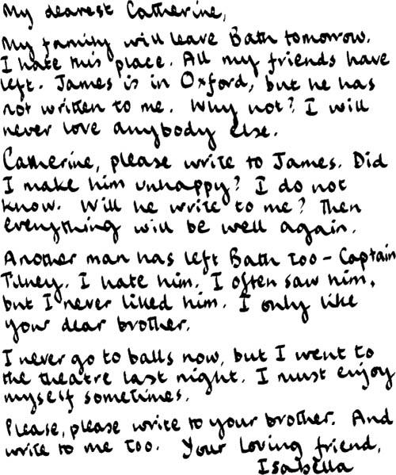
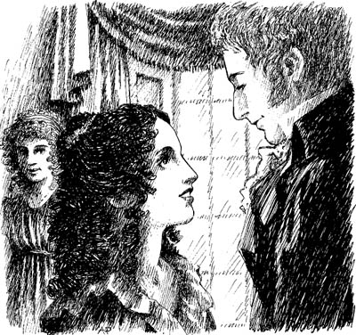

Listen to Part 1:

Thư của Isabella
Sáng thứ sáu, có hai chuyện xảy ra. Henry trở về Tu viện Northanger và một lá thư được gửi đến Catherine. Lá thư đó là của Isabella.

Catherine đưa lá thư cho Eleanor và Henry xem.
Catherine nói: "Em hiểu rồi. Đại úy Tilney không yêu Isabella. Chị ấy sẽ buồn lắm."
Henry nói: "Không, cô Morland ạ. Isabella sẽ không buồn đâu. Chị ấy không yêu anh trai tôi, Frederick. Cả hai người đều lầm tưởng. Hãy viết thư cho anh trai cô, James. Hãy quên Isabella Thorpe đi."

Hôm sau là thứ bảy. Tướng Tilney đến Luân Đôn. Nhưng Henry vẫn ở lại Tu viện Northanger. "Tôi sẽ về Woodston vào thứ bảy tuần sau," anh ta nói.
Listen to Part 2:
Catherine rất vui. Cô được ở bên hai người bạn thân yêu của mình.
Mục lục
- Trang bìa
- Trang bản quyền
- Nội dung
- Ghi chú về tác giả
- Ghi chú về câu chuyện này
- Những người trong câu chuyện này
- 1 Catherine đến Bath
- 2 Những người bạn mới của Catherine
- 3 John và James
- 4 Một buổi vũ hội tại Upper Rooms
- 5 'Tại sao anh lại nói dối em?'
- 6 Catherine và gia đình nhà Tilney
- 7 Isabella đang yêu
- 8 Thuyền trưởng Frederick Tilney
- 9 Isabella và James
- 10 Tu viện Northanger
- 11 'Cô Morland thân mến của tôi!'
- 12 Chuyến thăm đến Woodston
- 13 Một bức thư từ Isabella
- 14 Catherine về nhà
- 15 'Em sẽ lấy anh chứ?'